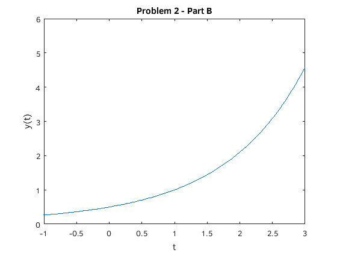
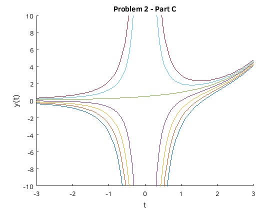
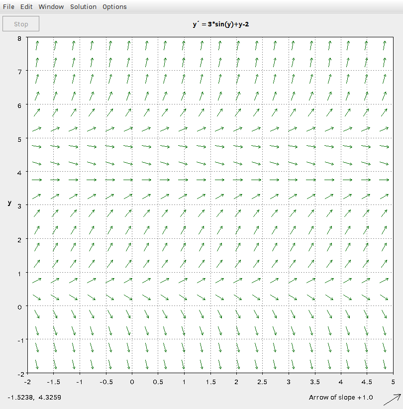
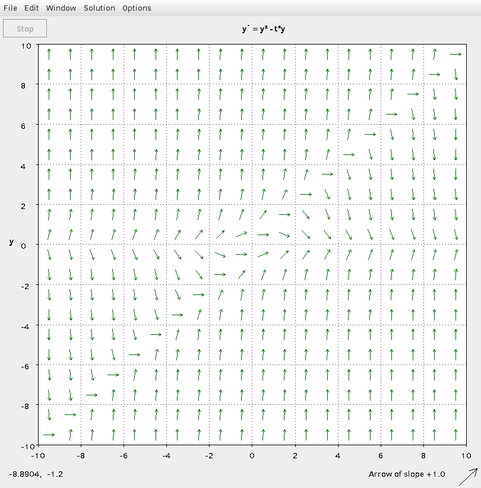
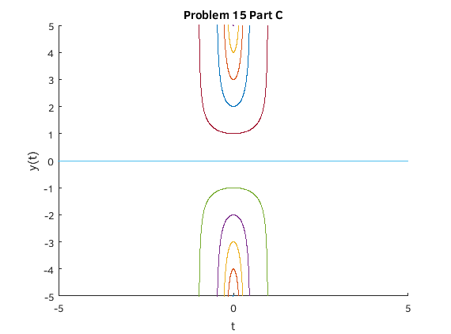

Problem Set B
Joseph Michael Martinsen
Math 308-510
Michael Pilant
Contents
Problem 2
fprintf('Problem 2\n') clear; syms y(t) eqn = t*diff(y,t) + 2*y == exp(t); % Part A ySol(t) = dsolve(eqn,y(1) == 1); yp = (exp(t)*(t-1)+1)/t^2; yprime = diff((exp(t)*(t-1)+1)/t^2,t); a = t*yprime +2*y; an = simplify(a); fprintf('Part A\n\n') fprintf('y = %s\ny'' = %s\n',char(yp),char(yprime)) fprintf('Subs into the %s results in %s\n',char(ySol(t)),char(a)) fprintf('Using MATLAB''s simplify command results in %s which is exactly what is should be\n\n',char(an)) % Part B fprintf('Part B\n\n') figure ezplot(yp) axis([-1 3 0 6]) title('Problem 2 - Part B') ylabel('y(t)') fprintf('The solution graph for t=0, y(t) approaches 0. The solution graph for large t''s, y(t) approaches Inf\n\n') % Part C fprintf('Part C\n\n') clear ySol(t) figure hold on for i= -3:3 cond = y(1) == i; ySol(t) = dsolve(eqn,cond); ezplot(ySol(t)) end axis([-3 3 -10 10]) title('Problem 2 - Part C') ylabel('y(t)') fprintf('See graphs for C\n\n') % Part D fprintf('Part D\n\n') fprintf('As the graphs approach t=0, the graphs diverge. For larg t''s, the graphs begin to approach Inf\n') fprintf('Yes there is a singularity, for the condition y(t) = 1, the graph does not diverge at t=0\n')
Problem 2 Part A y = (exp(t)*(t - 1) + 1)/t^2 y' = (exp(t) + exp(t)*(t - 1))/t^2 - (2*(exp(t)*(t - 1) + 1))/t^3 Subs into the 1/t^2 + (exp(t)*(t - 1))/t^2 results in 2*y(t) + t*((exp(t) + exp(t)*(t - 1))/t^2 - (2*(exp(t)*(t - 1) + 1))/t^3) Using MATLAB's simplify command results in 2*y(t) + t*((exp(t) + exp(t)*(t - 1))/t^2 - (2*(exp(t)*(t - 1) + 1))/t^3) which is exactly what is should be Part B The solution graph for t=0, y(t) approaches 0. The solution graph for large t's, y(t) approaches Inf Part C See graphs for C Part D As the graphs approach t=0, the graphs diverge. For larg t's, the graphs begin to approach Inf Yes there is a singularity, for the condition y(t) = 1, the graph does not diverge at t=0 
Problem 4
clear; fprintf('Problem 4\n\n') syms y(t) eqn = diff(y,t) - 2*y == sin(2*t); figure hold on for i = -0.5:.05:0 cond = y(1) == i; ySol(t) = dsolve(eqn,cond); ezplot(ySol(t)) end axis([0 4 -5 5]) title('Problem 4') ylabel('y') fprintf('As t increases, the slope increaces. ') fprintf('The 3 different behaviors are, slope is always negative (c = -.5,-.45,-.4,-.35), the slope begins positive then becomes negative. (c = -.3,-.25,-.2,-.15) ') fprintf('and the third is the slope is always positive (c = -.1, -.05, 0)\n\n')
Problem 4 As t increases, the slope increaces. The 3 different behaviors are, slope is always negative (c = -.5,-.45,-.4,-.35), the slope begins positive then becomes negative. (c = -.3,-.25,-.2,-.15) and the third is the slope is always positive (c = -.1, -.05, 0)

Problem 9
clear; fprintf('Problem 9\n\n') syms r k y(t) a(t) % Part A fprintf('Part A\n') a = diff(y,t) == r*y - k * y^2; aANS(t) = dsolve(a); fprintf('The solutions for %s are:\n', char(a)) display(aANS(t)) % Part B fprintf('\nPart B\n') b = diff(y,t) == t*(t^2+1)/(4*y^3); bANS = dsolve(b, y(0) == -1/sqrt(2)); fprintf('The solution to %s with y(0) = -1/sqrt(2) is\n %s\n\n',char(b), char(bANS)) % Part C c = (exp(t)*sin(y)+3*y)/(3*t-exp(t)*sin(y)) == diff(y,t); % dsolve(c) % Part D d = diff(y,t) == (2*y-y)/(2*t-y); dsolve(d) % Part E fprintf('Part E\n') e = diff(y,t) == (2*t+y)/(3+3*y^2-t); eANS = dsolve(e,y(0)==0); fprintf('The solution for %s is:\n %s\n\n',char(e),char(eANS))
Problem 9
Part A
The solutions for diff(y(t), t) == r*y(t) - k*y(t)^2 are:
ans =
0
r/k
(r*(tanh((r*(C34 + t))/2) + 1))/(2*k)
Part B
The solution to diff(y(t), t) == (t*(t^2 + 1))/(4*y(t)^3) with y(0) = -1/sqrt(2) is
-4^(1/4)*((t^2*(t^2 + 2))/16 + 1/16)^(1/4)
ans =
t
0
exp(C40)/2 + (t^(1/2)*exp(C40/2)*(-(4*t - exp(C40))/t)^(1/2))/2
exp(C40)/2 - (t^(1/2)*exp(C40/2)*(-(4*t - exp(C40))/t)^(1/2))/2
Part E
The solution for diff(y(t), t) == (2*t + y(t))/(3*y(t)^2 - t + 3) is:
(t/3 - 1)/(t^2/2 + (t^4/4 - (t/3 - 1)^3)^(1/2))^(1/3) + (t^2/2 + (t^4/4 - (t/3 - 1)^3)^(1/2))^(1/3)
Problem 12
clear; fprintf('Problem 12\n\n') fzero(@f12,1) fzero(@f12,5) % Part B - It is obvious that a solution is y = t because lines approach % that line fprintf(['The solution is evident because ',... 'because vector fields point at t axis']) % Part C fprintf('Part C\n\n') syms y(t) c eq = dsolve(diff(y,t) == y^2 - t*y,y(0) ==c); fprintf('Solving y(0) = c\ny(t) = %s\n',char(eq)) for i = -5:5 eq = dsolve(diff(y,t) == y^2 - t*y,y(0) ==i); fprintf('Solving y(0) = %d\ny(t) = %s\n',i,char(eq)) end
Problem 12
ans =
0.5170
ans =
4.9295
The solution is evident because because vector fields point at t axisPart C
Solving y(0) = c
y(t) = exp(-t^2/2)/(1/c - (2^(1/2)*pi^(1/2)*erf((2^(1/2)*t)/2))/2)
Solving y(0) = -5
y(t) = -exp(-t^2/2)/((2^(1/2)*pi^(1/2)*erf((2^(1/2)*t)/2))/2 + 1/5)
Solving y(0) = -4
y(t) = -exp(-t^2/2)/((2^(1/2)*pi^(1/2)*erf((2^(1/2)*t)/2))/2 + 1/4)
Solving y(0) = -3
y(t) = -exp(-t^2/2)/((2^(1/2)*pi^(1/2)*erf((2^(1/2)*t)/2))/2 + 1/3)
Solving y(0) = -2
y(t) = -exp(-t^2/2)/((2^(1/2)*pi^(1/2)*erf((2^(1/2)*t)/2))/2 + 1/2)
Solving y(0) = -1
y(t) = -exp(-t^2/2)/((2^(1/2)*pi^(1/2)*erf((2^(1/2)*t)/2))/2 + 1)
Solving y(0) = 0
y(t) = 0
Solving y(0) = 1
y(t) = -exp(-t^2/2)/((2^(1/2)*pi^(1/2)*erf((2^(1/2)*t)/2))/2 - 1)
Solving y(0) = 2
y(t) = -exp(-t^2/2)/((2^(1/2)*pi^(1/2)*erf((2^(1/2)*t)/2))/2 - 1/2)
Solving y(0) = 3
y(t) = -exp(-t^2/2)/((2^(1/2)*pi^(1/2)*erf((2^(1/2)*t)/2))/2 - 1/3)
Solving y(0) = 4
y(t) = -exp(-t^2/2)/((2^(1/2)*pi^(1/2)*erf((2^(1/2)*t)/2))/2 - 1/4)
Solving y(0) = 5
y(t) = -exp(-t^2/2)/((2^(1/2)*pi^(1/2)*erf((2^(1/2)*t)/2))/2 - 1/5)

Problem 15
clear; fprintf('Problem 15\n\n') syms y(t) c % Part A fprintf('Part A\n\n') eqn = diff(y,t) == t * y^3; ansA = dsolve(eqn,y(0)==c); fprintf(['Using dsolve to solve %s with initial condition y(0) = c ', ... 'the solutions are\ny(t) = %s\ny(t) = %s\nI think Matlab g', ... 'ives two solutions because it gives the solution for posi', ... 'tive or negative values of c\n\n'] ... , char(eqn),char(ansA(1)),char(ansA(2))) % Part B fprintf('Part B\n\n') fprintf('Substituting for c = 0\n') % Can't sub because of division by 0 try subs(ansA(1),c,0) subs(ansA(2),c,0) catch err = lasterror; msg = err.message; warning(msg) end l1 = limit(ansA(1),c,0); l2 = limit(ansA(2),c,0); fprintf('Taking the limit as c approaches c results in %s and %s\n\n' ... ,l1,l2) % Part C fprintf('Part C\n\n') figure hold on for i = -5:5 ezplot(dsolve(eqn,y(0)==i)) end axis([-5 5 -5 5]) title('Problem 15 Part C') ylabel('y(t)') fprintf(['From looking at the plot, it appears that the solution is ', ... 'unstable because the plots diverge above\nand below t = 0\n'])
Problem 15 Part A Using dsolve to solve diff(y(t), t) == t*y(t)^3 with initial condition y(0) = c the solutions are y(t) = (2^(1/2)*(1/(1/(2*c^2) - t^2/2))^(1/2))/2 y(t) = -(2^(1/2)*(1/(1/(2*c^2) - t^2/2))^(1/2))/2 I think Matlab gives two solutions because it gives the solution for positive or negative values of c Part B Substituting for c = 0 Warning: Error using symengine Division by zero. Taking the limit as c approaches c results in 0 and 0 Part C From looking at the plot, it appears that the solution is unstable because the plots diverge above and below t = 0